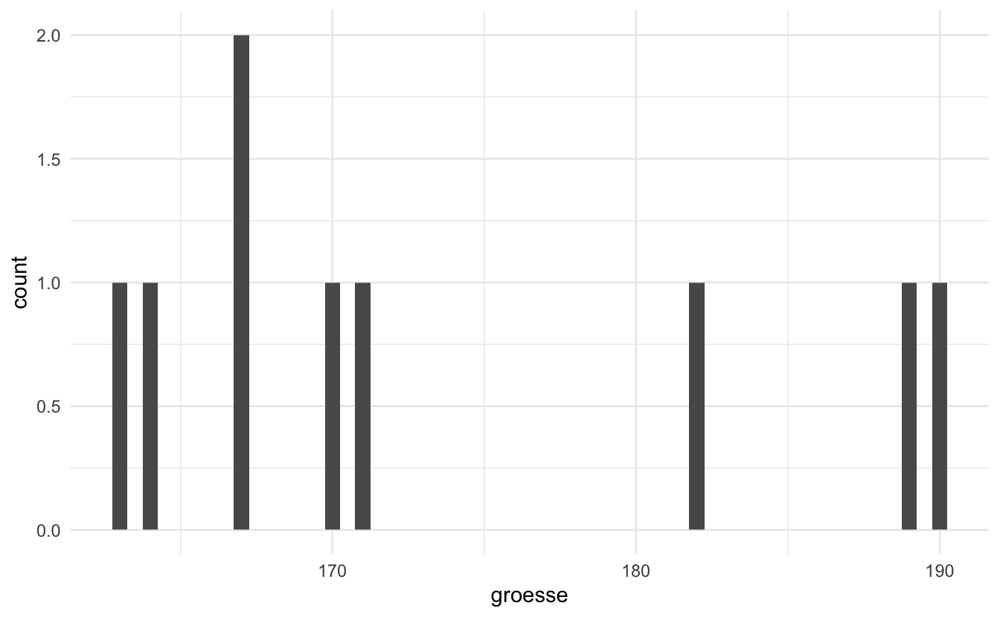
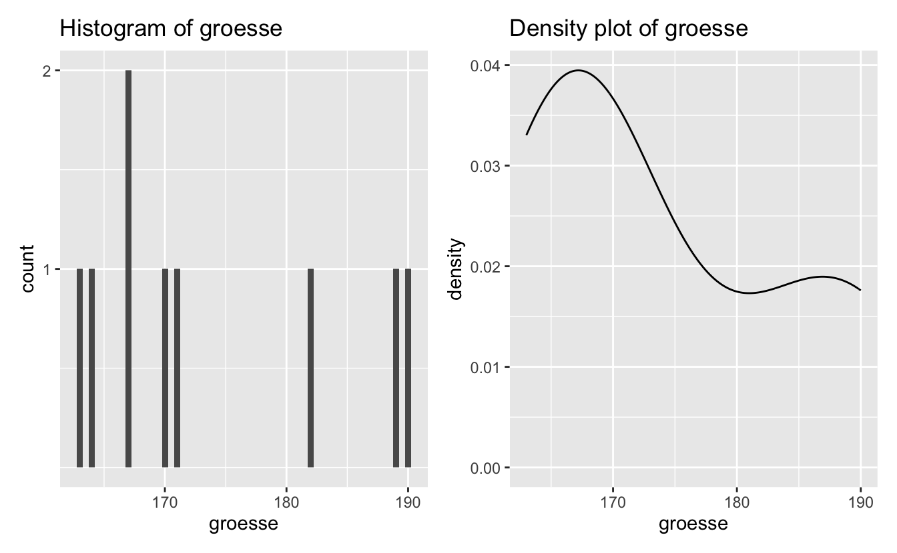
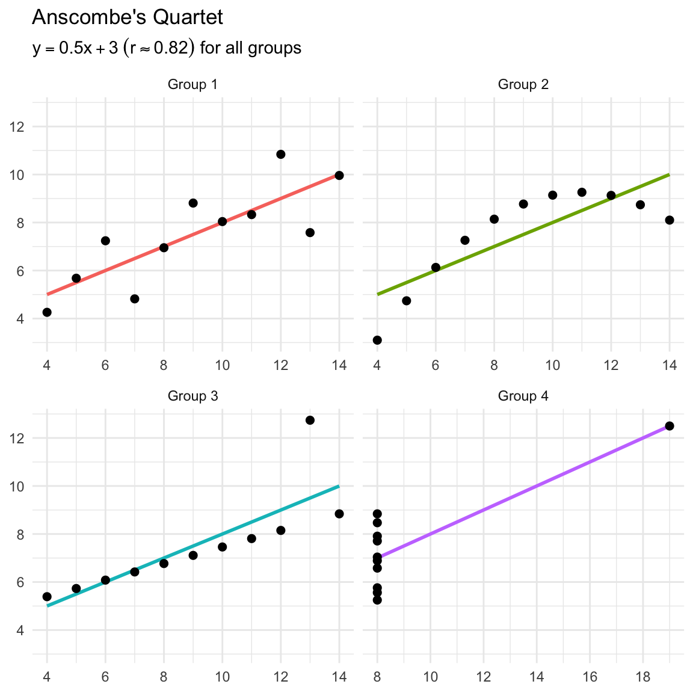

pacman::p_load(tidyverse,
here,
janitor)7 Deskriptive Statistik
Maße der zentralen Tendenz und Streuung
Lernziele
In diesem Kapitel werden wir lernen…
- über Maße der zentralen Tendenz (Mittelwert, Median, Modus)
- über Streuungsmaße (Bereich, Standardabweichung)
- wie man die Funktion
summarise()vondplyrbenutzt - wie man Zusammenfassungen
.byGruppe erstellt
Lesungen
Die Pflichtlektüre zur Vorbereitungen auf dieses Thema sind
Kap. 3, Abschnitt 3.4-3.9 (Descriptive statistics, models, and distributions) in Winter (2019) (online verfügbar über das HU Grimm Zentrum.
Bereich 4.5 (Groups) in Kapital 4 (Data Transformation) in Wickham et al. (2023).
7.1 Einrichten
7.1.1 Umgebung löschen
Ein wichtiger Schritt, über den wir noch nicht viel gesprochen haben, ist sicherzustellen, dass Sie ein neues Skript immer mit einer leeren R-Umgebung starten. Das bedeutet, dass wir keine Objekte in der Umgebung gespeichert haben sollten, aber auch keine Pakete geladen haben sollten. Wir wollen nämlich sicherstellen, dass alles, was wir tun, ausschließlich in diesem Skript ausgeführt wird und nicht von einem Paket oder Daten abhängt, die wir aus einem anderen Skript geladen haben. Um dies zu erreichen, können Sie auf Sitzung > R neu starten klicken, um mit einer neuen Umgebung zu beginnen, oder die Tastenkombination Cmd/Strg+Strg+0 verwenden.
7.1.2 Pakete
Wir müssen die Pakete tidyverse, here und janitor laden. Die letzten beiden brauchen wir, weil wir lokale CSV-Datensätze laden werden.
7.1.3 Daten laden
Wir werden heute zwei Datensätze verwenden: eine leicht veränderte Version des groesse_geburtstag-Datensatzes aus dem letzten Abschnitt (groesse_geburtstag_ws2324.csv) und languageR_english.csv, das eine kürzere Version des english-Datensatzes aus dem languageR-Paket ist. Wenn Sie diese Daten noch nicht haben, laden Sie sie direkt in Ihren Daten-Ordner vom GitHub-Kurs herunter (klicken Sie auf “Download raw file” neben dem “Raw”-Button):
df_groesse <- read_csv(here("daten", "groesse_geburtstag_ws2324.csv"))df_eng <- read_csv(here("daten", "languageR_english.csv")) |>
clean_names() |>
# fix some wonky variable names:
rename(rt_lexdec = r_tlexdec,
rt_naming = r_tnaming)7.2 Deskriptive Statistik
Deskriptive Statistiken beschreiben quantitativ die zentrale Tendenz, die Variabilität und die Verteilung von Daten. Sie werden manchmal auch als zusammenfassende Statistiken bezeichnet, weil wir die beobachteten Daten zusammenfassen. Zu den gängigen zusammenfassenden Statistiken gehören der Wertebereich (Minimum, Maximum), der Mittelwert und die Standardabweichung. Deskriptive Statistiken helfen uns, unsere Daten in vollem Umfang zu verstehen, und sind ein wichtiger Schritt bei der Untersuchung unseres Datensatzes, bevor wir fortgeschrittenere Inferenzstatistiken durchführen (die wir in diesem Kurs nicht behandeln werden).
7.2.1 Anzahl der Beobachtungen (\(n\))
Die Anzahl der Beobachtungen in einem Datensatz ist keine statistische Größe, sondern eine wichtige Information bei der Zusammenfassung oder Beschreibung von Daten. Wenn wir mehr Daten haben (höher \(n\)), können wir den Schlussfolgerungen, die wir aus unseren Daten ziehen, mehr Vertrauen schenken, da wir mehr Beweise haben. Umgekehrt kann es sein, dass bei weniger Daten (niedriger \(n\)) unsere zusammenfassende Statistik nicht auf die Grundgesamtheit verallgemeinerbar ist. Wir können die Anzahl der Beobachtungen in einem Datensatz mit der R-eigenen Funktion nrow() überprüfen:
nrow(df_groesse)[1] 9length() gegenüber nrow()
Die Funktion length() sagt uns, wie viele (horizontale) Werte in einem Objekt enthalten sind. Wenn das Objekt ein Datenrahmen (statt eines Vektors) ist, sagt sie uns, wie viele Spalten wir haben.
length(df_groesse)[1] 5Wenn es sich bei dem Objekt jedoch um einen Vektor handelt, dann gibt uns length() die Anzahl der Beobachtungen an.
vector <- c(1,5,2,6,8,4,7,8,3)
length(vector)[1] 97.2.2 Maße der zentralen Tendenz (Lagemaße)
Maße der zentralen Tendenz beschreiben quantitativ die Mitte unserer Daten. Wahrscheinlich haben Sie schon einmal drei Maße der zentralen Tendenz kennengelernt: den Mittelwert, den Median und den Modus.
7.2.2.1 Mittelwert (\(\mu\) oder \(\bar{x}\))
Der Mittelwert oder Durchschnitt ist die Summe aller Werte geteilt durch die Anzahl der Werte (wie in Gleichung \(\ref{eq-mean}\)). In der mathematischen Notation wird sum mit dem großen griechischen Sigma (\(\sum\)) geschrieben, wie in der Gleichung \(\ref{eq-sigma}\).
\[\begin{align} \mu &= \frac{Summe\;der\;Werte} {n} \label{eq-mean} \\ \bar{x} &= \frac{\sum{x}} {n} \label{eq-sigma} \end{align}\]
7.2.2.2 Populationsmittelwert (\(\mu\)) versus Stichprobenmittelwert (\(\bar{x}\))
Beide Gleichungen bedeuten dasselbe, verwenden aber unterschiedliche Schreibweisen, um dieselbe Gleichung darzustellen. Während \(\mu\) den Populationsmittelwert darstellt, repräsentiert \(\bar{x}\) den Stichprobenmittelwert. Der Populationsmittelwert ist der wahre Mittelwert einer Messung in einer gesamten Population (z. B. die Körpergröße aller Studenten an der Humboldt-Universität zu Berlin). Ein Stichprobenmittel ist der Mittelwert einer Stichprobenpopulation, aus der wir unsere Daten erhoben haben. Wir haben zum Beispiel 9 Beobachtungen in df_groesse. Diese Daten stellen eine Stichprobe von Daten aus einer größeren Grundgesamtheit dar.
Wir können den Mittelwert leicht von Hand berechnen, wenn wir nur ein paar Werte haben. Erinnern Sie sich an unseren Datensatz von letzter Woche, in dem wir unsere Höhen in Zentimetern gesammelt haben (171, 168, 182, 190, 170, 163, 164, 167, 189). Es gibt 9 Werte, also müssen wir diese Höhen addieren und die Summe durch 9 teilen.
171+ 168+ 182+ 190+ 170+ 163+ 164+ 167+ 189 / 9[1] 1396Daraus ergibt sich eine durchschnittliche Körpergröße von 1396 cm. Das kann nicht richtig sein, was ist also schief gelaufen? Wir können die obige Gleichung korrigieren, indem wir die Höhen in Klammern setzen (()), bevor wir durch \(n\) dividieren.
(171+ 168+ 182+ 190+ 170+ 163+ 164+ 167+ 189) / 9[1] 173.7778Dieses Problem wurde durch die Reihenfolge der Operationen verursacht, die im Folgenden näher beschrieben wird. Das Wichtigste ist, dass Sie sicher sein können, dass das Ergebnis einer bestimmten Operation vor allen anderen Operationen ausgeführt wird, wenn Sie es in Paranthesen einschließen.
Operatorrangfolge: KEMDAS
Vielleicht erinnern Sie sich, dass Sie als Kind im Mathematikunterricht etwas über die Reihenfolge der Operationen gelernt haben. Dies bezieht sich auf die Reihenfolge der Ausführung, wenn wir eine mathematische Gleichung mit mehreren Operatoren wie Division, Addition und Multiplikation haben. R folgt auf KEMDAS (das ich von PEMDAS im Englischen übernommen habe), was für:
| letter | operation | R |
|---|---|---|
| K | Klammern | (x + y) |
| E | Exponenten | x^y |
| M | Multiplikation | x*y |
| D | Division | x/y |
| A | Addierung | x + y |
| S | Subtraktion | x - y |
Multiplikation und Division werden jedoch von links nach rechts ausgeführt, ebenso wie Addition und Subtraktion.
Wir können auch die Ergebnisse einer Gleichung als Objekt oder mehrere Werte als Vektor (eine Liste von Werten der gleichen Klasse) speichern. Wir könnten dann die Funktionen sum() und length() verwenden, um den Mittelwert zu berechnen, oder einfach die Funktion mean() benutzen.
# save groesse as a vector
groesse <- c(171, 168, 182, 190, 170, 163, 164, 167, 189)
# divide the sum of groesse by the n of groesse
sum(groesse)/length(groesse)[1] 173.7778# or use the mean() function
mean(groesse)[1] 173.7778Unsere Daten sind oft nicht in einem einzelnen Vektor gespeichert, sondern in einem Datensatz. Wir können die Funktion mean() auf eine Variable in einem Datenrahmen anwenden, indem wir den Operator $ verwenden, um anzugeben, dass wir eine Spalte aus einem Datenrahmen auswählen wollen (datenrahmen$variable).
mean(df_groesse$groesse)[1] 173.6667Der $-Operator ist Teil der nativen R-Syntax und ähnelt dem Operator pdf_groesse |>select(groesse) in der dplyr-Syntax.
7.2.2.3 Median
Ein weiteres Maß für die zentrale Tendenz ist der Median, d. h. der Wert in der Mitte des Datensatzes. Wenn Sie alle Ihre Werte in aufsteigender (oder absteigender) Reihenfolge anordnen, ist der mittlere Wert der Median. Wenn Sie zum Beispiel 5 Werte haben, ist der 3. Bei 6 Werten ist der Mittelwert des 3. und 4. Wertes der Median. Die Hälfte der Daten liegt unter dem Median, die andere Hälfte über dem Median.
Um unsere Daten in aufsteigender Reihenfolge zu sortieren, können wir die Funktion sort() verwenden. Wir können dann einfach zählen, welches der mittlere Wert ist:
sort(df_groesse$groesse)[1] 163 164 167 167 170 171 182 189 190Das ist einfach, wenn wir nur ein paar Beobachtungen haben. Wir könnten alternativ einfach die Funktion Median() verwenden.
median(df_groesse$groesse)[1] 170Ein wichtiges Merkmal des Medians ist, dass er nicht von Ausreißern oder Extremwerten beeinflusst wird. Schauen wir uns an, was passiert, wenn wir unsere größte Körpergröße (190 cm) so ändern, dass sie der Größe der derzeit größten Person der Welt entspricht: 251 cm.
df_groesste <- df_groesse |> mutate(groesse = ifelse(groesse == 190, 251, groesse))sort(df_groesste$groesse)[1] 163 164 167 167 170 171 182 189 251median(df_groesste$groesse)[1] 170mean(df_groesste$groesse)[1] 180.4444Wir sehen, dass sich der Mittelwert von ungefähr 174cm auf 180cm geändert hat. Der Median blieb jedoch gleich (170 cm), weil der Mittelwert unabhängig von den anderen Werten in einem Datensatz ist. Aus diesem Grund wird der Median häufig anstelle des Mittelwerts angegeben, wenn die Daten stark zu extremeren Werten neigen, wie z. B. bei der Angabe der Einkommen in einer Bevölkerung. Durchschnittseinkommen können aufgrund einer kleinen Gruppe von extrem gut Verdienenden stark verzerrt sein und sind in der Regel nicht repräsentativ für das Einkommen der Mehrheit der Bürger.
7.2.2.4 Modus
Der Modus ist der Wert, der in einem Datensatz am häufigsten vorkommt, und ist ein weiteres Maß für die zentrale Tendenz. Es gibt keine R-Funktion, um den Modus zu bestimmen, aber wir haben bereits einige gängige Möglichkeiten gesehen, ihn zu visualisieren: mit einem Histogramm oder einem Dichteplot.
df_groesse |>
ggplot(aes(x = groesse)) +
geom_histogram(binwidth = .5) +
theme_minimal() 
7.2.3 Streuungsmaße
Maße der zentralen Tendenz beschreiben (normalerweise) die Mitte der Daten. Streuungsmaße beschreiben die Streuung der Datenpunkte und sagen etwas darüber aus, wie die Daten insgesamt verteilt sind.
7.2.3.1 Bereich
Der “Bereich” von Werten kann sich auf den höchsten (maximalen) und den niedrigsten (minimalen) Wert oder auf die Differenz zwischen höchstem und niedrigstem Wert beziehen. Die R-Basisfunktionen max() und min() geben die höchsten und niedrigsten Werte aus.
max(groesse)[1] 190min(groesse)[1] 163Oder wir können einfach die Funktion range() verwenden, die diese beiden Zahlen nebeneinander ausgibt.
range(groesse)[1] 163 190Wir können die Differenz zwischen diesen Werten ermitteln, indem wir den Minimalwert vom Maximalwert subtrahieren.
max(groesse) - min(groesse)[1] 27In einem Histogramm oder Dichteplot werden diese Werte durch den niedrigsten und den höchsten Wert auf der x-Achse dargestellt.

7.2.3.2 Standardabweichung (sd oder \(\sigma\))
Die Standardabweichung ist ein Maß dafür, wie weit die Daten im Verhältnis zum Mittelwert gestreut sind. Eine niedrige Standardabweichung bedeutet, dass die Daten um den Mittelwert herum gruppiert sind (d. h. es gibt weniger Streuung), während eine hohe Standardabweichung bedeutet, dass die Daten stärker gestreut sind. Ob eine Standardabweichung hoch oder niedrig ist, hängt von der Skala und der Maßeinheit ab, in der die Daten vorliegen. Die Standardabweichung wird sehr oft angegeben, wenn der Mittelwert berichtet wird.
Die Standardabweichung (sd) ist gleich der Quadratwurzel (\(\sqrt{}\) oder sqrt() in R) der Summe der quadrierten Wertabweichungen vom Mittelwert (\((x - \mu)^2\)) geteilt durch die Anzahl der Beobachtungen minus 1 (\(n-1\)), angegeben in Gleichung \(\ref{eq-sd}\).
\[\begin{align} \sigma & = \sqrt{\frac{(x_1-\mu)^2 + (x_2-\mu)^2 + ... + (x_N-\mu)^2}{N-1}} \label{eq-sd} \end{align}\]
Das sieht einschüchternd aus, aber wir können die Standardabweichung in R mit der Funktion sd() berechnen.
sd(groesse)[1] 10.46157Wenn man jedoch weiß, wie man die Standardabweichung von Hand berechnen kann, versteht man, was die Zahl bedeutet. Lassen Sie uns die Berechnung der Standardabweichung für eine kleine Gruppe von Werten üben. Unter Berücksichtigung der Gleichung für die Standardabweichung in \(\ref{eq-sd}\) können wir die Standardabweichung von Hand berechnen, wenn wir den Wert jeder Beobachtung, den Mittelwert dieser Werte und die Anzahl dieser Werte kennen. In einem Vektor mit 3 Beobachtungen (3, 5, 9) sind unsere Werte (\(x\)) zum Beispiel folgende:
values <- c(3,5,16)
values[1] 3 5 16Setzt man diese in die Gleichung für die Standardabweichung ein, erhält man Gleichung \(\ref{eq-sd1}\).
\[\begin{align} \sigma & = \sqrt{\frac{(3-\mu)^2 + (5-\mu)^2 + (16-\mu)^2}{N-1}} \label{eq-sd1} \end{align}\]
Unser Mittelwert (\(\mu\)) ist:
mean(values)[1] 8Wenn wir dies zu Gleichung \(\ref{eq-sd1}\) hinzufügen, erhalten wir Gleichung \(\ref{eq-sd2}\).
\[\begin{align} \sigma & = \sqrt{\frac{(3-8)^2 + (5-8)^2 + (16-8)^2}{N-1}} \label{eq-sd2} \end{align}\]
Die Anzahl der Werte (\(n\)) ist:
length(values)[1] 3Wenn wir dies zu Gleichung \(\ref{eq-sd2}\) hinzufügen, erhalten wir Gleichung \(\ref{eq-sd3}\).
\[\begin{align} \sigma & = \sqrt{\frac{(3-8)^2 + (5-8)^2 + (16-8)^2}{3-1}} \label{eq-sd3} \end{align}\]
If we carry out all of the operations following PEDMAS, then we get Equations \(\ref{eq-sd4}\) through \(\ref{eq-sd}\):
\[\begin{align} \sigma & = \sqrt{\frac{(-5)^2 + (-3)^2 + (8)^2}{3-1}} \\ \label{eq-sd4} \\ & = \sqrt{\frac{25 + 9 + 64}{3-1}} \\ & = \sqrt{\frac{98}{2}} \\ & = \sqrt{49} \\ & = 7 \end{align}\]
Um unsere Arbeit zu überprüfen, berechnen wir die Standardabweichung (\(\sigma\)) in “R”:
sd(values)[1] 77.2.3.3 Warum Standardabweichung?
Die Standardabweichung ist ein Maß dafür, wie “eng” die beobachteten Werte am Mittelwert liegen. Wenn die meisten Beobachtungen sehr nahe am Mittelwert liegen, ist die Standardabweichung im Verhältnis zum Mittelwert eine kleine Zahl. Wenn es viele Beobachtungen mit großen Abweichungen vom Mittelwert gibt, wird die Standardabweichung tendenziell eine große Zahl sein (relativ zum Mittelwert).
Verschiedene Datensätze können denselben Mittelwert, aber sehr unterschiedliche Standardabweichungen aufweisen. Ein Beispiel:
values2 <- c(55,55,55,55,55,57,57,57,57,57)
values3 <- c(1,1,1,1,100,100,100,100,100)mean(values2)[1] 56mean(values3)[1] 56Wir sehen, dass values2 und values3 den gleichen Mittelwert haben. Daraus könnte man schließen, dass die Daten ähnlich sind. Aber ihre Standardabweichungen werden sich unterscheiden, weil ihre jeweiligen beobachteten Werte alle unterschiedlich weit vom Mittelwert abweichen. Welcher Vektor wird Ihrer Meinung nach die geringste Standardabweichung haben? Und warum?
sd(values2)[1] 1.054093sd(values3)[1] 52.17758Die größere Standardabweichung für Werte3 spiegelt die Tatsache wider, dass die Werte tendenziell sehr weit vom Mittelwert entfernt sind. Die kleinere Standardabweichung für Werte2 spiegelt die Tatsache wider, dass der Wert für diese Variable tendenziell recht nahe am Mittelwert liegt.
Quadrat und Quadratwurzel
Warum quadrieren wir die Abweichung jeder Beobachtung vom Mittelwert, um dann später die Quadratwurzel aus ihrer Summe geteilt durch \(N-1\) zu berechnen? Da die Hälfte unserer Beobachtungen unterhalb und die Hälfte oberhalb des Mittelwerts liegen wird, sind die resultierenden Differenzen, wenn wir den Mittelwert von den Werten abziehen, zur Hälfte negativ und zur Hälfte positiv. Wenn wir positive und negative Werte zusammenzählen, heben sie sich gegenseitig auf. Wenn wir also alle diese Abweichungen vom Mittelwert quadrieren, werden alle Werte positiv sein (eine positive Zahl multipliziert mit einer positiven Zahl ist eine positive Zahl, während eine negative Zahl multipliziert mit sich selbst ebenfalls eine positive Zahl ergibt). Wenn wir dann die Quadratwurzel dieser Werte berechnen, erhalten wir die ursprüngliche Größe der Abweichung, aber immer als positiven Wert.
Eigenschaften der Grundgesamtheit
Sowohl der Mittelwert als auch die Standardabweichung sagen etwas über die Grundgesamtheit aus, aus der unsere Datenstichprobe stammt. Je mehr Beobachtungen wir sammeln, desto genauer werden diese Maße im Durchschnitt sein.
7.3 Zusammenfassende Statistiken mit R
Wir haben bereits einige nützliche Funktionen zur Berechnung von zusammenfassenden Statistiken gesehen (z.B. mean(), median(), sd()). In der Regel möchten wir jedoch mehrere zusammenfassende Statistiken auf einmal erstellen und zusammenfassende Statistiken zwischen Gruppen vergleichen. Um dies zu erreichen, bietet das Paket dplyr aus dem tidyverse einige hilfreiche Funktionen. Lassen Sie uns nun den df_eng-Datensatz verwenden, um diese dplyr-Verben kennenzulernen.
7.3.1 dplyr::summarise
Die Funktion summarise() von dplyr berechnet Zusammenfassungen von Daten, aber wir müssen ihr sagen, was sie berechnen soll, und für welche Variable(n). Die Funktion n() liefert zum Beispiel die Anzahl der Beobachtungen (nur wenn sie innerhalb von summarise() oder mutate() verwendet wird). Lassen Sie uns zunächst prüfen, wie viele Beobachtungen wir im Datensatz df_eng haben:
df_eng |>
summarise(N = n())# A tibble: 1 × 1
N
<int>
1 4568Werfen wir nun einen Blick auf das Histogramm von rt_lexdec, der Variable, die die lexikalische Entscheidungsantwortzeit in Millisekunden enthält:
df_eng |>
ggplot() +
aes(x = rt_lexdec) +
geom_histogram()Wir sehen, dass die Antwortzeit zwischen 500 ms und 1320 ms liegt, wobei die meisten Antworten zwischen 550 ms und 900 ms liegen. Wir sehen auch eine bimodale Verteilung, d. h. es gibt zwei Modi (zwei Spitzen). Der allgemeine Modus liegt bei 700 ms (500 Beobachtungen), mit einer zweiten Spitze bei 600 ms (~420 Beobachtungen).
Wir können auch mehrere Berechnungen auf einmal durchführen. Lassen Sie uns auch den Mittelwert und die Standardabweichung der lexikalischen Entscheidungsaufgabe (rt_lexdec, in Millisekunden) berechnen.
df_eng |>
summarise(mean_lexdec = mean(rt_lexdec, na.rm=T),
sd_lexdec = sd(rt_lexdec, na.rm = T),
N = n()) # A tibble: 1 × 3
mean_lexdec sd_lexdec N
<dbl> <dbl> <int>
1 708. 115. 4568Jetzt sehen wir, dass die durchschnittliche lexikalische Entscheidungsantwortzeit 708.1 ms betrug, mit einer Standardabweichung von 114.9.
Und wir können Berechnungen mit typischen mathematischen Operatoren (z.B. +, -, /, *, ^ …) und/oder Funktionen angeben. Was war der Unterschied zwischen der längsten und der kürzesten lexikalischen Entscheidungsantwortzeit?
df_eng |>
summarise(range_lexdec = max(rt_lexdec) - min(rt_lexdec))# A tibble: 1 × 1
range_lexdec
<dbl>
1 828.
Fehlende Werte
Einige Berechnungen sind nicht möglich, wenn Werte fehlen. Die Variable rt_naming hat einen fehlenden Wert. Dies ist in der Ausgabe der Funktion summary() zu sehen, die vor der Berechnung der zusammenfassenden Statistik alle NA-Werte löscht.
df_eng |>
select(rt_lexdec, rt_naming) |>
summary() rt_lexdec rt_naming
Min. : 495.4 Min. :412.3
1st Qu.: 617.4 1st Qu.:468.1
Median : 699.6 Median :570.6
Mean : 708.1 Mean :565.9
3rd Qu.: 775.3 3rd Qu.:658.4
Max. :1323.2 Max. :808.9
NA's :1 Die Funktion mean() entfernt jedoch nicht die NA-Werte.
df_eng |>
summarise(mean_naming = mean(rt_naming))# A tibble: 1 × 1
mean_naming
<dbl>
1 NAWas tun wir mit fehlenden Werten? Bei der Arbeit mit realen Daten ist es nicht trivial, wie wir mit fehlenden Werten umgehen. Wir könnten z. B. alle NA-Werte in 0 umwandeln, wenn wir wollen, dass sie zur Berechnung des Mittelwerts beitragen. Meistens wollen wir sie jedoch einfach entfernen.
Wir können dies leicht mit dem dplyr-Verb drop_na() tun:
df_eng |>
drop_na() |>
summarise(mean_naming = mean(rt_naming))# A tibble: 1 × 1
mean_naming
<dbl>
1 566.7.4 Gruppierung von Variablen
Wir wollen jedoch nicht immer nur die zusammenfassenden Statistiken für einen gesamten Datensatz kennen. Normalerweise wollen wir bestimmte Gruppen vergleichen (z. B. Vergleich der Reaktionszeiten bei lexikalischen Entscheidungen zwischen Altersgruppen)
7.4.1 .by =
Das semi-neue (und experimentelle) Argument .by = in summarise() berechnet unsere Berechnungen auf gruppierten Teilmengen der Daten. Es nimmt eine Variable (d.h. einen Spaltennamen) und gruppiert nach den Stufen dieser Variable.
df_eng |>
drop_na() |>
summarise(mean_lexdec = mean(rt_lexdec),
sd_lexdec = sd(rt_lexdec),
N = n(),
.by = age_subject) |>
arrange(mean_lexdec)# A tibble: 2 × 4
age_subject mean_lexdec sd_lexdec N
<chr> <dbl> <dbl> <int>
1 young 630. 69.1 2283
2 old 787. 96.2 22847.4.2 Gruppieren nach mehreren Variablen
- Wir können auch nach mehreren Variablen gruppieren
- dafür brauchen wir
concatenate(c())
- dafür brauchen wir
df_eng |>
drop_na() |>
summarise(mean_lexdec = mean(rt_lexdec),
sd_lexdec = sd(rt_lexdec),
N = n(),
.by = c(age_subject, word_category)) |>
arrange(age_subject)# A tibble: 4 × 5
age_subject word_category mean_lexdec sd_lexdec N
<chr> <chr> <dbl> <dbl> <int>
1 old N 790. 101. 1452
2 old V 780. 86.5 832
3 young N 633. 70.8 1451
4 young V 623. 65.7 832group_by()
- Anstelle des neuen
.by-Arguments können wir dasdplyr-Verbgroup_by()undungroup()verwenden- Ich bevorzuge das neue
.by, weil es die Gruppierung lokal hält (keine Notwendigkeit fürungroup()) - Behalten Sie dies im Hinterkopf, Sie könnten
group_by()in freier Wildbahn sehen
- Ich bevorzuge das neue
df_eng |>
group_by(age_subject, word_category) |>
summarise(mean_lexdec = mean(rt_lexdec),
sd_lexdec = sd(rt_lexdec),
N = n()) |>
ungroup() |>
arrange(age_subject)# A tibble: 4 × 5
age_subject word_category mean_lexdec sd_lexdec N
<chr> <chr> <dbl> <dbl> <int>
1 old N 790. 101. 1452
2 old V 780. 86.5 832
3 young N 633. 70.8 1452
4 young V 623. 65.7 8327.5 Anscombes Quartett
Francis Anscombe erstellte 1973 vier Datensätze, um zu veranschaulichen, wie wichtig es ist, Daten zu visualisieren, bevor man sie analysiert und ein Modell erstellt. Diese vier Diagramme stellen 4 Datensätze dar, die alle einen nahezu identischen Mittelwert und eine Standardabweichung, aber sehr unterschiedliche Verteilungen aufweisen.
| grp | mean_x | mean_y | min_x | min_y | max_x | max_y | crrltn |
|---|---|---|---|---|---|---|---|
| Group 1 | 9 | 7.500909 | 4 | 4.26 | 14 | 10.84 | 0.8164205 |
| Group 2 | 9 | 7.500909 | 4 | 3.10 | 14 | 9.26 | 0.8162365 |
| Group 3 | 9 | 7.500000 | 4 | 5.39 | 14 | 12.74 | 0.8162867 |
| Group 4 | 9 | 7.500909 | 8 | 5.25 | 19 | 12.50 | 0.8165214 |

7.5.1 DatasaurRus
Das Paket datasauRus (Davies et al., 2022) enthält einige weitere Datensätze, die ähnliche Mittelwerte und sd, aber unterschiedliche Verteilungen aufweisen, die in Tabelle 7.3 angegeben sind.
pacman::p_load("datasauRus")datasaurus_dozen |>
group_by(dataset) |>
summarize(
mean_x = mean(x),
mean_y = mean(y),
std_dev_x = sd(x),
std_dev_y = sd(y),
corr_x_y = cor(x, y)
) |>
knitr::kable() |>
kableExtra::kable_styling(font_size = 20)| dataset | mean_x | mean_y | std_dev_x | std_dev_y | corr_x_y |
|---|---|---|---|---|---|
| away | 54.26610 | 47.83472 | 16.76983 | 26.93974 | -0.0641284 |
| bullseye | 54.26873 | 47.83082 | 16.76924 | 26.93573 | -0.0685864 |
| circle | 54.26732 | 47.83772 | 16.76001 | 26.93004 | -0.0683434 |
| dino | 54.26327 | 47.83225 | 16.76514 | 26.93540 | -0.0644719 |
| dots | 54.26030 | 47.83983 | 16.76774 | 26.93019 | -0.0603414 |
| h_lines | 54.26144 | 47.83025 | 16.76590 | 26.93988 | -0.0617148 |
| high_lines | 54.26881 | 47.83545 | 16.76670 | 26.94000 | -0.0685042 |
| slant_down | 54.26785 | 47.83590 | 16.76676 | 26.93610 | -0.0689797 |
| slant_up | 54.26588 | 47.83150 | 16.76885 | 26.93861 | -0.0686092 |
| star | 54.26734 | 47.83955 | 16.76896 | 26.93027 | -0.0629611 |
| v_lines | 54.26993 | 47.83699 | 16.76996 | 26.93768 | -0.0694456 |
| wide_lines | 54.26692 | 47.83160 | 16.77000 | 26.93790 | -0.0665752 |
| x_shape | 54.26015 | 47.83972 | 16.76996 | 26.93000 | -0.0655833 |
Wenn wir die Datensätze grafisch darstellen, sehen sie alle sehr unterschiedlich aus (Abbildung 7.2)!

Der Punkt hier ist: Stellen Sie Ihre Daten immer grafisch dar und betrachten Sie nicht nur die beschreibenden Statistiken!!! Beides ist sehr wichtig für das Verständnis Ihrer Daten. Wir haben bereits gesehen, wie wir unsere Rohdaten mithilfe von Histogrammen, Dichteplots, Balkendiagrammen und Streudiagrammen darstellen können. Nächste Woche werden wir uns ansehen, wie wir unsere zusammenfassenden Statistiken darstellen und wie wir die Rohdaten in die Darstellung mit mehrteiligen Diagrammen einbeziehen können.
Lernziele 🏁
Today we learned…
- über Maße der zentralen Tendenz ✅
- über Streuungsmaße ✅
- wie man die Funktion
summarise()vondplyrverwendet ✅ - wie man Zusammenfassungen nach Gruppen erstellt ✅
7.6 Hausaufgaben
::: nonincremental
- Berechnen Sie die Standardabweichung der Werte
152, 19, 1398, 67, 2111, ohne die Funktionsd()zu benutzen.- zeige deine Arbeit. Die folgende R-Syntax könnte nützlich sein (je nachdem, wie Sie es machen wollen):
c()mean()x^2berechnet das Quadrat eines Wertes (hier,x)sqrt()berechnet die Quadratwurzellength()liefert die Anzahl der Beobachtungen in einem Vektor
- zeige deine Arbeit. Die folgende R-Syntax könnte nützlich sein (je nachdem, wie Sie es machen wollen):
- Benutze die Funktion
sd(), um die Standardabweichung der obigen Werte zu drucken. Haben Sie es richtig gemacht? - Benutze
summarise, um den Mittelwert, die Standardabweichung und die Anzahl der Beobachtungen fürrt_namingimdf_lexdecDatenrahmen zu drucken.- Hinweis: Müssen Sie fehlende Werte (
NA) entfernen?
- Hinweis: Müssen Sie fehlende Werte (
- Machen Sie dasselbe, aber fügen Sie das Argument
.by()hinzu, um die mittlere Reaktionszeit der Benennungsaufgabe (rt_naming) pro Monat zu ermitteln- Ordnen Sie die Ausgabe nach der mittleren Antwortzeit für die Namensgebung an.
Session Info
Erstellt mit R version 4.4.0 (2024-04-24) (Puppy Cup) und RStudioversion 2023.9.0.463 (Desert Sunflower).
sessionInfo()R version 4.4.0 (2024-04-24)
Platform: aarch64-apple-darwin20
Running under: macOS Ventura 13.2.1
Matrix products: default
BLAS: /Library/Frameworks/R.framework/Versions/4.4-arm64/Resources/lib/libRblas.0.dylib
LAPACK: /Library/Frameworks/R.framework/Versions/4.4-arm64/Resources/lib/libRlapack.dylib; LAPACK version 3.12.0
locale:
[1] en_US.UTF-8/en_US.UTF-8/en_US.UTF-8/C/en_US.UTF-8/en_US.UTF-8
time zone: Europe/Berlin
tzcode source: internal
attached base packages:
[1] stats graphics grDevices datasets utils methods base
other attached packages:
[1] datasauRus_0.1.8 patchwork_1.2.0 janitor_2.2.0 here_1.0.1
[5] lubridate_1.9.3 forcats_1.0.0 stringr_1.5.1 dplyr_1.1.4
[9] purrr_1.0.2 readr_2.1.5 tidyr_1.3.1 tibble_3.2.1
[13] ggplot2_3.5.1 tidyverse_2.0.0
loaded via a namespace (and not attached):
[1] utf8_1.2.4 generics_0.1.3 renv_1.0.7 xml2_1.3.6
[5] lattice_0.22-6 stringi_1.8.3 hms_1.1.3 digest_0.6.35
[9] magrittr_2.0.3 evaluate_0.23 grid_4.4.0 timechange_0.3.0
[13] fastmap_1.1.1 Matrix_1.7-0 rprojroot_2.0.4 jsonlite_1.8.8
[17] mgcv_1.9-1 fansi_1.0.6 viridisLite_0.4.2 scales_1.3.0
[21] cli_3.6.2 rlang_1.1.3 crayon_1.5.2 splines_4.4.0
[25] bit64_4.0.5 munsell_0.5.1 withr_3.0.0 yaml_2.3.8
[29] parallel_4.4.0 tools_4.4.0 tzdb_0.4.0 colorspace_2.1-0
[33] pacman_0.5.1 kableExtra_1.4.0 vctrs_0.6.5 R6_2.5.1
[37] lifecycle_1.0.4 snakecase_0.11.1 htmlwidgets_1.6.4 bit_4.0.5
[41] vroom_1.6.5 pkgconfig_2.0.3 pillar_1.9.0 gtable_0.3.5
[45] glue_1.7.0 systemfonts_1.0.6 highr_0.10 xfun_0.43
[49] tidyselect_1.2.1 rstudioapi_0.16.0 knitr_1.46 farver_2.1.1
[53] nlme_3.1-164 htmltools_0.5.8.1 labeling_0.4.3 svglite_2.1.3
[57] rmarkdown_2.26 compiler_4.4.0